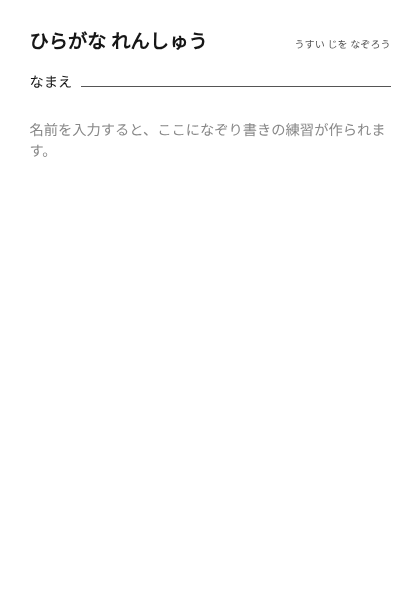
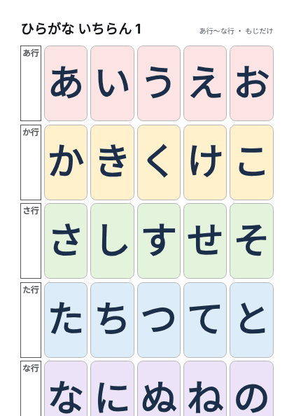
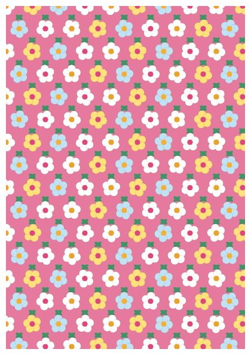
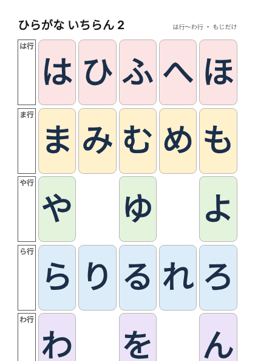

ホーム > ひらがな・数字
ひらがな・数字
ひらがな表、なぞり書き、数字表です。名前入りのなぞり書きは、入力した名前がこの端末のブラウザの中だけで使われ、サイトには送られません。

名前入りひらがな練習なぞり書き ひらがな表壁に貼る用
ひらがな表壁に貼る用 数字表 1〜10丸を数えて色を塗る
数字表 1〜10丸を数えて色を塗る ひらがな一覧(絵つき)1 表(あ〜の)25文字・表面。表→裏の順で並べています
ひらがな一覧(絵つき)1 表(あ〜の)25文字・表面。表→裏の順で並べています ひらがな一覧(絵つき)1 裏(花柄)表の裏に印刷。文字が透けにくい柄
ひらがな一覧(絵つき)1 裏(花柄)表の裏に印刷。文字が透けにくい柄 ひらがな一覧(絵つき)2 表(は〜ん)25マス・表面。表→裏の順で並べています
ひらがな一覧(絵つき)2 表(は〜ん)25マス・表面。表→裏の順で並べています ひらがな一覧(絵つき)2 裏(花柄)表の裏に印刷。文字が透けにくい柄
ひらがな一覧(絵つき)2 裏(花柄)表の裏に印刷。文字が透けにくい柄
ひらがな一覧(文字だけ)1 表(あ〜の)絵なし・25文字。表→裏の順で並べています
ひらがな一覧(文字だけ)1 裏(花柄)表の裏に印刷。文字が透けにくい柄
ひらがな一覧(文字だけ)2 表(は〜ん)絵なし・25マス。表→裏の順で並べています ひらがな一覧(文字だけ)2 裏(花柄)表の裏に印刷。文字が透けにくい柄
ひらがな一覧(文字だけ)2 裏(花柄)表の裏に印刷。文字が透けにくい柄
使い方
- 表は壁に貼って、おとなといっしょに声に出して読みます。
- なぞり書きは、うすい字を鉛筆やクレヨンでなぞります。
- 数字表は、丸を数えながら色をぬります。
あわせて使える本
紹介リンクを含みます(Amazonアソシエイト)。書名・著者・出版社・ISBNは書店や国立国会図書館の書誌情報で確認したものです。
- 池谷裕二 監修(成美堂出版)
- 汐見稔幸 監修、わらべきみか 絵(小学館)
- 成美堂出版編集部 編(成美堂出版)